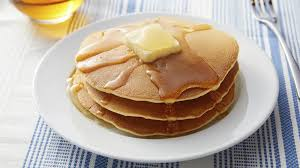

Ingrédients :
- 200g de farine
- 2 cuillères à soupe de sucre
- 1 cuillère à café de levure chimique
- 1/2 cuillère à café de sel
- 300ml de lait
- 2 œufs
- 50g de beurre fondu
- 1 cuillère à café d'extrait de vanille (facultatif)
Instructions :
- Dans un grand bol, mélanger la farine, le sucre, la levure chimique et le sel.
- Dans un autre bol, fouetter le lait, les œufs, le beurre fondu et l'extrait de vanille.
- Verser les ingrédients liquides dans les ingrédients secs et mélanger jusqu'à obtenir une pâte lisse.
- Chauffer une poêle antiadhésive à feu moyen et y verser une petite louche de pâte.
- Laisser cuire jusqu'à ce que des bulles se forment à la surface, puis retourner et cuire l'autre côté jusqu'à ce qu'il soit doré.
- Répéter avec le reste de la pâte.
Bon appétit !